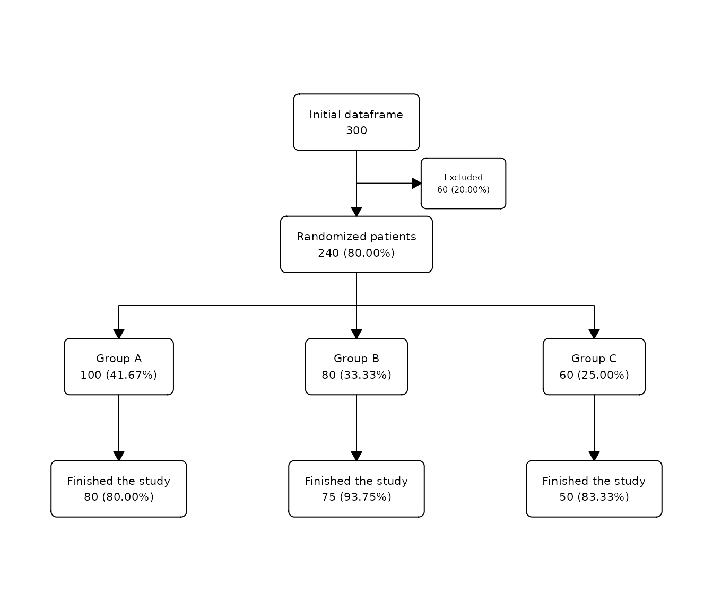

Example 1
In this example, we will try to create a flowchart for the complete flow of patients in the SAFO study:
Example 2
In this example, we will try to exactly reproduce the original flowchart of the SAFO study published in Nature Medicine: SAFO flowchart.
First, we need to do some pre-processing to reproduce the text in the larger boxes:
# Create labels for exclusion box:
label_exc <- paste(
c(str_glue("{sum(safo$inclusion_crit == 'Yes' | safo$exclusion_crit == 'Yes' | safo$decline_part == 'Yes', na.rm = T)} excluded:"),
map_chr(c("inclusion_crit", "decline_part", "exclusion_crit"), ~str_glue("{sum(safo[[.x]] == 'Yes', na.rm = TRUE)} {attr(safo[[.x]], 'label')}")),
map_chr(4:15, ~str_glue(" - {sum(safo[[.x]] == 'Yes')} {attr(safo[[.x]], 'label')}"))),
collapse = "\n")
label_exc <- gsub("exclusion criteria", "exclusion criteria:", label_exc)
safo1 <- safo |>
filter(group == "cloxacillin plus fosfomycin", !is.na(reason_pp)) |>
mutate(reason_pp = droplevels(reason_pp))
label_exc1 <- paste(
c(str_glue("{nrow(safo1)} excluded:"),
map_chr(levels(safo1$reason_pp), ~str_glue(" - {sum(safo1$reason_pp == .x)} {.x}"))),
collapse = "\n")
label_exc1 <- str_replace_all(label_exc1, c("nosocomial" = "nosocomial\n", "treatment" = "treatment\n"))
safo2 <- safo |>
filter(group == "cloxacillin alone", !is.na(reason_pp)) |>
mutate(reason_pp = droplevels(reason_pp))
label_exc2 <- paste(
c(str_glue("{nrow(safo2)} excluded:"),
map_chr(levels(safo2$reason_pp), ~str_glue(" - {sum(safo2$reason_pp == .x)} {.x}"))),
collapse = "\n")
label_exc2 <- str_replace_all(label_exc2, c("resistant" = "resistant\n", "blood" = "blood\n"))Second, let’s create and customize the flowchart using the functions in the package:
safo |>
as_fc(label = "patients assessed for eligibility", text_pattern = "{N} {label}") |>
fc_filter(!is.na(group), label = "randomized", text_pattern = "{n} {label}", show_exc = TRUE, just_exc = "left", text_pattern_exc = "{label}", label_exc = label_exc, text_fs_exc = 7, offset_exc = 0.15) |>
fc_split(group, text_pattern = "{n} asssigned\n {label}") |>
fc_filter(itt == "Yes", label = "included in intention-to-treat\n population", show_exc = TRUE, text_pattern = "{n} {label}", label_exc = "patient did not receive allocated\n treatment (withdrew consent)", text_pattern_exc = "{n} {label}", text_fs_exc = 7) |>
fc_filter(pp == "Yes", label = "included in per-protocol\n population", show_exc = TRUE, just_exc = "left", text_pattern = "{n} {label}", text_fs_exc = 7) |>
fc_modify(
~.x |>
filter(n != 0) |>
mutate(
text = case_when(id == 11 ~ label_exc1, id == 13 ~ label_exc2, TRUE ~ text)
)
) |>
fc_draw()
Example 3
In this example, we will create a flowchart without any
data.frame, using the N argument to manually
specify the numbers to display in the boxes:
as_fc(N = 300) |>
fc_filter(N = 240, label = "Randomized patients", show_exc = TRUE) |>
fc_split(N = c(100, 80, 60), label = c("Group A", "Group B", "Group C")) |>
fc_filter(N = c(80, 75, 50), label = "Finished the study") |>
fc_draw()
Example 4
The use of N= argument can be combined with the use of a
data.frame. In this example, we will use the
N= argument in a flowchart that uses a
data.frame:
safo |>
as_fc(label = "Patients assessed for eligibility") |>
fc_filter(!is.na(group), label = "Randomized", show_exc = TRUE) |>
fc_split(group) |>
fc_split(N = c(50, 55, 10, 100), label = c("Group A", "Group B")) |>
fc_draw()